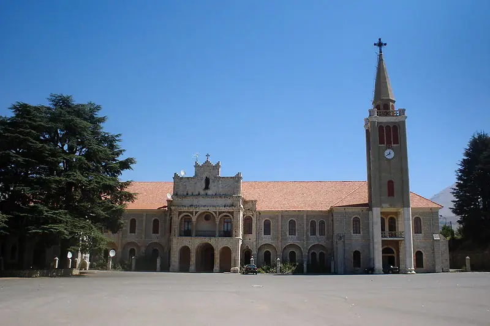

Bkerke: Seat of the Maronite Patriarchate
Bkerke is the seat of the Maronite Patriarchate, a hillside village in the Jounieh district of Lebanon, near Harissa. The Maronite Patriarch has lived there in winter since the 19th century. Saint Charbel was ordained a priest at Bkerke on July 23, 1859.
What Bkerke Is
Bkerke (also written Bkerké or Bkirki) is a village in the district of Jounieh. It houses the seat of the Maronite Patriarchate for the entire East and is the winter residence of the Maronite Patriarch. According to the official Vatican-visit site for Pope Leo XIV, it is the tenth seat of the Maronite Patriarchate after Antioch. It stands on the hillside below Harissa, home of the great shrine of Our Lady of Lebanon.
How Bkerke Became the Seat
Sheikh Khattar el-Khazen built a monastery at Bkerke in 1703. It passed through several hands, and an apostolic bull in 1779 dedicated it to the benefit of the Maronite community. The Maronite Synod treated it as a dependency of the See of Qannoubine in the Qadisha Valley. In 1823 it became the Patriarchal seat for the winter season.
Sources differ on the date of the move: another history places the decree in 1790 and its carrying out in 1830, under Patriarch Joseph Hobeiche.
The building has grown over time. Patriarch Jean el-Hajj renovated it in 1890, adding an upper floor. Patriarch Paul Meouchi restored it in 1970, and Patriarch Nasrallah Sfeir added a wing in 1995 for the archives and a museum of the Patriarchal seat, with tombs of the Patriarchs and stained glass in the church.
Summer in Dimane, Winter in Bkerke
The Patriarchs of Bkerke have moved between two residences: Dimane for the summer and Bkerke for the winter. Before Bkerke, the Maronite Synod treated the monastery there as a dependency of the See of Qannoubine, in the Qadisha Valley. See the Qannoubine monastery.

Saint Charbel at Bkerke
Charbel Makhlouf was ordained a priest at the Maronite Patriarchate in Bkerke on July 23, 1859. His monastery was under the Patriarchal Vicar, who lived at Bkerke at the time. He then returned to the Monastery of Saint Maron at Annaya, where he lived out his life as a monk and, later, a hermit. For the full story, see Charbel's life.
Our pilgrimage guide includes Bkerke in its three-day plan.
The Patriarchs of Bkerke
The official list of Patriarchs between Dimane and Bkerke includes Youssef Hobeich (1823-1845), Paul Massad (1854-1890), Patriarch when Charbel was ordained, Elias Hoayek (1899-1931), Paul Meouchi (1955-1975) and Nasrallah Sfeir (1986-2011). The current Patriarch, Béchara Raï, has served since 2011.
Patriarch Elias Hoayek, who decided to build the shrine of Our Lady of Lebanon at Harissa, died at Bkerke on December 24, 1931. In 2019 the Holy See recognized his heroic virtues.
Visiting Bkerke
Bkerke is close to Harissa and Jounieh, so it is easy to pair with them. Our three-day plan puts Harissa in the morning and Bkerke after it. The Patriarchal seat is a working residence and a church, so ask ahead whether the church and museum can be visited when you plan to go.
Frequently Asked Questions
What is Bkerke?
The seat of the Maronite Patriarchate, a hillside village in the Jounieh district of Lebanon, near Harissa. The Maronite Patriarch lives there in winter.
Why is Bkerke important to Saint Charbel?
He was ordained a priest at the Maronite Patriarchate in Bkerke on July 23, 1859.
When did Bkerke become the Patriarchal seat?
The official visit site for Pope Leo XIV dates it to 1823, as the winter seat. Another history dates a decree to 1790 and its carrying out to 1830.
Who lives at Bkerke today?
The Maronite Patriarch of Antioch and all the East, Béchara Raï, who has served since 2011.
Is Bkerke the same as Harissa?
No. They are neighbors on the same hill above Jounieh. Harissa is the shrine of Our Lady of Lebanon, and Bkerke is the seat of the Maronite Patriarchate.
More Places in Lebanon
Our Lady of Lebanon at Harissa; the Cedars of God. Saint Charbel's Lebanon connects the places in his life.
Sources
- Pope Leo XIV in Lebanon (official visit site), November 25, 2025: the Maronite Patriarchal See of Bkerke - history, building, list of Patriarchs
- Shrine of Our Lady of Lebanon (official): history - Patriarch Hoayek and the founding of Harissa
- Maronite Foundation: The main Christian sanctuaries - Bkerki's 1790 decree and 1830 settlement; Harissa hill
- Saint Charbel (Australia): history - ordination in Bkerke in 1859, Patriarchal Vicar
- Wikipedia: Charbel Makhlouf - ordination on July 23, 1859, in Bkerke
- Holy See Press Office, July 6, 2019: decrees of the Congregation for the Causes of Saints - Elias Hoyek, died in Bkerke, December 24, 1931